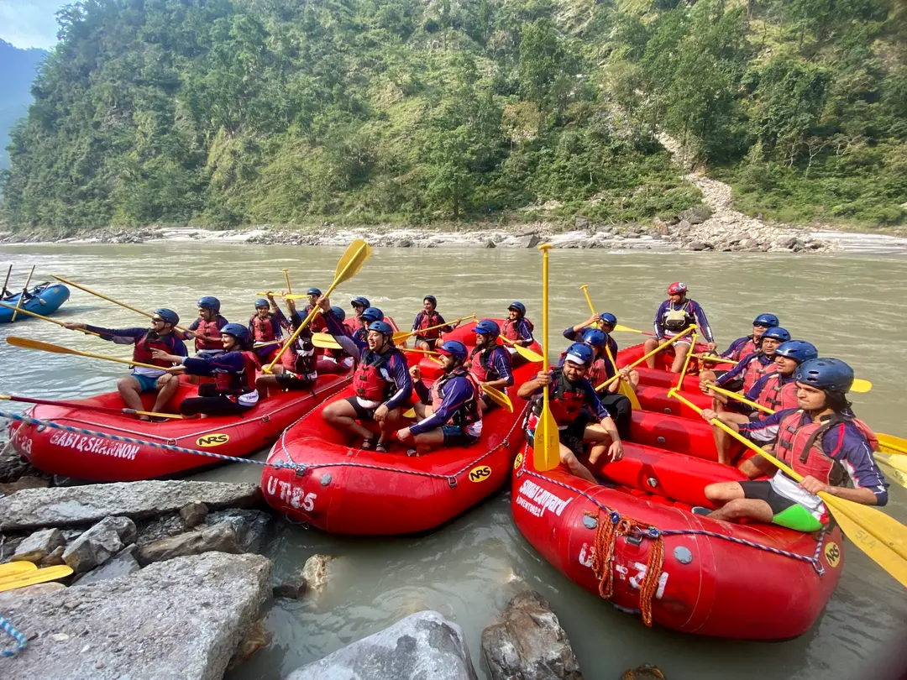
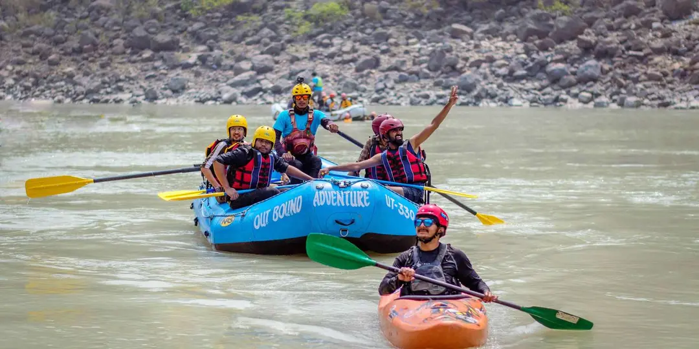
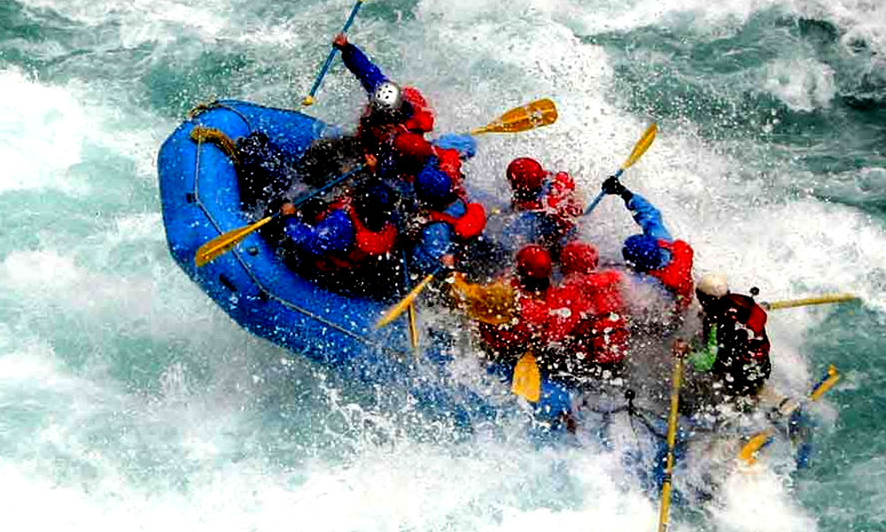
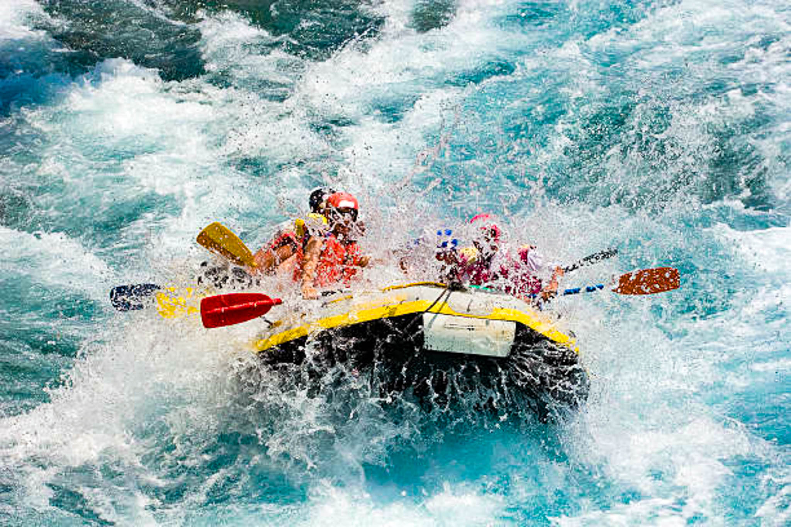
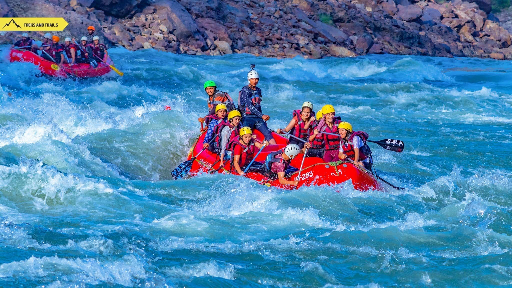
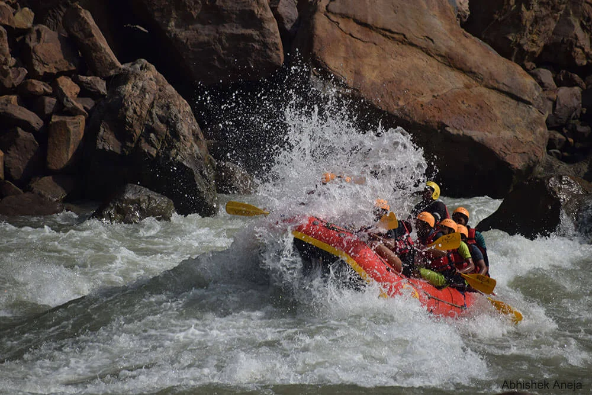

River rafting in Rishikesh is one of the most thrilling and iconic adventure activities in India, making the town the undisputed "White Water Rafting Capital" of the country. The mighty Ganga River here offers Grade II to IV rapids (depending on the stretch), surrounded by stunning Himalayan foothills, dense forests, and spiritual vibes. The most popular stretch is from Marine Drive (Kaudiyala) to Shivpuri or Rishikesh — a 16–35 km journey filled with exciting rapids like "Roller Coaster," "Golf Course," "Black Money," and "The Wall."
Rafting in Rishikesh is not just about adrenaline — it’s a full experience of nature’s power, teamwork, and pure joy. Professional guides, high-quality equipment, and safety measures make it accessible for beginners, families, and adventure enthusiasts alike. After the rapids, many camps offer cliff jumping, body surfing, and riverside camping with bonfires under the stars — turning a day of rafting into an unforgettable Himalayan escape.
September to May (post-monsoon to pre-monsoon) — water levels perfect for thrilling rapids. Avoid June–August due to high currents and safety risks.
Grade II–IV rapids, stunning Ganga canyon views, cliff jumping, body surfing, riverside camping, professional guides, and combo packages with camping/BBQs.
Wear quick-dry clothes, carry sunscreen & water bottle, listen to guide instructions, book with certified operators, and go for full-day packages for the best experience.
"Rafting on the Ganga is more than an adventure — it’s a wild dance with the sacred river, where every rapid reminds you of nature’s raw power and the joy of living fully in the moment."